Alt Text
Alt Text is a small photography and writing project from Matthew Howell.
Each week, usually on Sunday, a small piece of writing is accompanied by a photograph. The writing focuses on the physical subject of the photo, gently pulling at its context, and finding some part of a larger whole. Sometimes the photos are new, but often it’s a good excuse to go digging in the archives and pull out interesting bits.
The work is meant to be something of an inverse of the HTML img element’s alt attribute. In practice, the image’s alt text is an accessibility consideration, describing the image, that for any number of reasons may not be viewable by the reader.
Here, the alt text is offered first, perhaps with more depth and detail than the image itself.
- 0021 Tree
-
 0020 Lawn
0020 Lawn
- 0019 Two Apartment Buildings
- 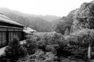 0018 Koyason
- 0017 Cape
- 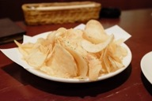 0016 Dill
- 0015 Pilots
- 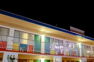 0014 Thunderbird
- 0013 Giant
- 0012 Triangles
- 0011 Bridges
- 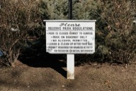 0010 Please
- 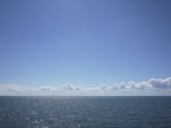 0009 Ferry
- 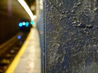 0008 Beams
- 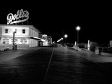 0007 Candyland
- 0006 Hills
- 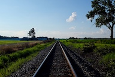 0005 Tracks
- 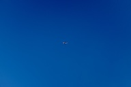 0004 Airplane
- 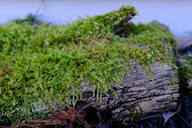 0003 Moss
- 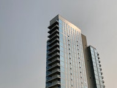 0002 Glass and Steel
- 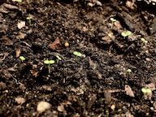 0001 Sprouts